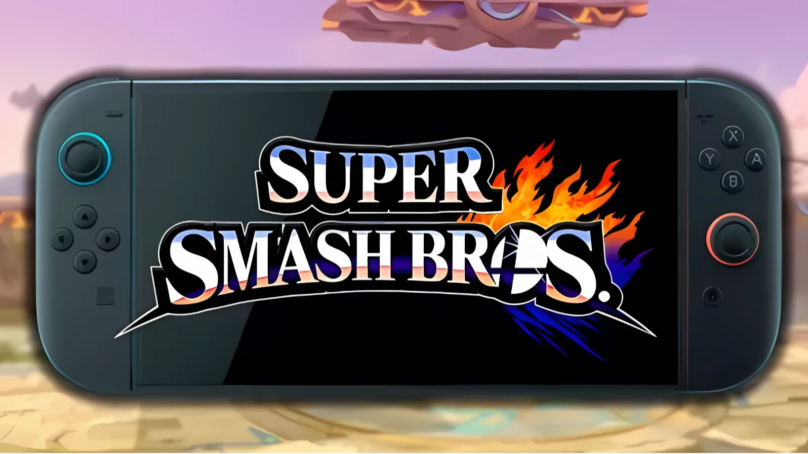

Luiso · 7 de septiembre de 2026
Nintendo estaría preparando dos nuevos proyectos para sus principales franquicias, de acuerdo con una serie de afirmaciones realizadas por un supuesto informante conocido como Malo932. Entre ellas se encuentran una nueva entrega de Super Smash Bros. y el regreso de Nintendogs.
Según el humo, el próximo Super Smash Bros. no sería una adaptación de Ultimate para Nintendo Switch 2, sino un juego completamente nuevo dentro de la franquicia.
La afirmación resulta especialmente llamativa porque Super Smash Bros. Ultimate continúa siendo uno de los mayores éxitos de la compañía. El juego de Nintendo Switch ya superó los 37 millones de unidades vendidas, mientras que la franquicia completa acumula alrededor de 77 millones de copias comercializadas.
La otra gran afirmación apunta al regreso de Nintendogs, una franquicia que no recibe una entrega nueva desde Nintendogs + Cats, lanzado para Nintendo 3DS en 2011.
El Nintendogs original debutó en Nintendo DS y se convirtió en uno de los mayores éxitos de la portátil. Las distintas versiones del juego vendieron 23,96 millones de unidades, convirtiéndolo en el segundo título más vendido de Nintendo DS, solamente por detrás de New Super Mario Bros.
Por su parte, Nintendogs + Cats alcanzó 3,99 millones de copias vendidas hasta finales de 2015.
Aunque Malo932 no es una fuente reconocida dentro de la industria, algunas de sus afirmaciones anteriores terminaron coincidiendo con anuncios oficiales de Nintendo. El usuario habría anticipado la llegada de un nuevo Star Fox, el remake de The Legend of Zelda: Ocarina of Time y un nuevo juego de Nintendo Switch Sports.
También habría adelantado la existencia de dos presentaciones Nintendo Direct, incluyendo una dedicada a The Legend of Zelda, apenas unos días antes de que Nintendo confirmara oficialmente ambos eventos.
Sin embargo, esto no significa que sus nuevas afirmaciones sean necesariamente ciertas. Entre otros rumores todavía sin confirmar atribuidos al mismo informante aparecen un remake de Super Metroid en pixel art, un nuevo Wario Land y un nuevo juego 3D de Mario, supuestamente previstos para 2027.
También se le atribuyen afirmaciones sobre DLC para Mario Kart World con Fox McCloud y otro proyecto de Star Fox.